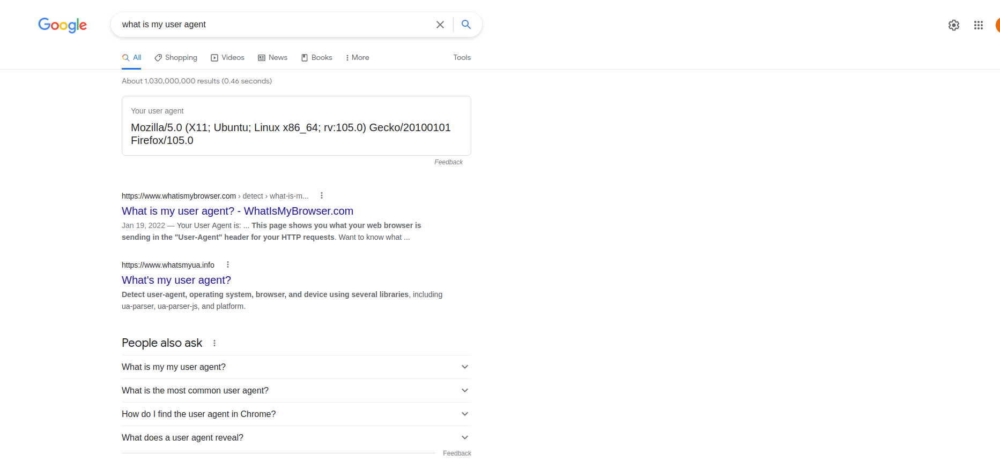

Ethical Issues in Web Scraping
Ethical Issues in Webscraping
Ethical issues in web scraping are very important
It involves grabbing information that is not yours and using it for your own purposes.
It might be even contrary to the terms of services of the website.
It also involves cluttering the servers of the website with potentially many requests
Ethical Issues in Webscraping
How do you affect a website when you webscrape?

Make your scraper sleep
A human is slow enough for a server to handle the requests
Imagine a human the tried to enter a website 5 times per second continuously for 48 hours
That amounts to 864,000 requests
That’s a lot
Make your scraper sleep
Big websites such as Google or Amazon have enough servers
However, most website do not.
If you’re scraping a website only making a single request, it shouldn’t matter.
How does it work?
Make your scraper sleep
library(scrapex)
# List of links to make a request
school_links <- spanish_schools_ex()
# List where we will save the information for each link
all_schools <- list()
single_school_scraper <- function(single_link) {
# Before making a request, sleep 5 seconds
Sys.sleep(5)
# Perform some scraping
}
# Loop over each link to make a request
for (single_link in school_links) {
# Save results in a list
all_schools[[single_link]] <- single_school_scraper(single_link)
}Make your scraper sleep
How many seconds should you wait?
Sometimes
robotstxtfile will tell youMultiplying the total number of websites you’ll scrape by the number of seconds you’ll sleep will give you a rough estimate of how much time your program will last.
It’s always a good idea to limit your scraping to non-working hours such as over the evening
Terms of services
Since GDPR, TOS have become very important
These terms of services are lengthy and contain a lot of information for what the website can do with your data
If you’re building a scraping program, however, this is important.
Whenever you intend to scrape a website, make sure to read the terms of services.
Terms of services
Facebook TOS:
You will not collect users’ content or information, or otherwise access Facebook, using automated means (such as harvesting bots, robots, spiders or scrapers) without our prior permission.
Terms of services
If a website explicitly prohibits you from scraping, you should not do it. Let me make that clear again: if the terms of services forbids you from scraping their website, you should not do it. It can have legal consequences.
If it’s not clear from the terms of services, contact the website and receive written confirmation from the website.
Copying information
Even if allowed, a website might have some preferences on which sections of the website you can scrape
Standard file called
robots.txton nearly all website on the internet which tells you want parts of the website can be scraped.robots.txtis just a convenient form for a website to tell you which URLs you can scrape; it will not enforce anything nor block you in any way.In all cases, you should follow the guidelines of the
robots.txt.
Copying information
The robots.txt file of most websites is located in the main URL
It documents each URL of the Google website and it explicitly tells you which ones are allowed or disallowed.
Copying information
Validate which paths you can scrape with
robotstxtProvide any link you want to scrape to confirm it.
library(robotstxt)
paths_allowed("https://wikipedia.org")[1] TRUEpaths_allowed("https://facebook.com")[1] FALSEIdentifying yourself
You need to be extra careful and identify yourself.
Give the website a clear identification of who is making those requests.
The website can contact you if they find there’s something wrong with your requests, or even directly block you.
Remember at all times: we’re scraping data that is not ours and we should be polite when grabbing that data.
User-Agent

User-Agent
library(httr)
set_config(
user_agent("Mozilla/5.0 (X11; Ubuntu; Linux x86_64; rv:105.0) Gecko/20100101 Firefox/105.0; Jorge Cimentada / cimentadaj@gmail.com")
)